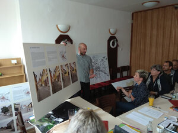

Volební program Volba pro město Trhové Sviny

Náš program vychází z toho, co se nám za poslední volební období podařilo. Mnoho věcí, které chceme realizovat, navazuje na to, co jsme již dokázali. V posledních čtyřech letech nás negativně ovlivnily události, které nikdo z nás nečekal a které výrazně zkomplikovaly naše životy. Podle posledních zpráv nás nečeká období o nic jednodušší, spíše naopak. I tomu je potřeba přizpůsobit priority města. Bude potřeba co nejvýhodněji zajistit základní potřeby občanů. To ale neznamená, že rezignujeme na rozvoj města. Je potřeba, abychom byli připraveni na rozumné investice, věnovali se všem součástem života ve městě i všem skupinám obyvatel.
Naše priority vychází z reálných finančních i věcných možností. Neslibujeme vzdušné zámky, například krytý bazén, i když víme, že ten by uvítalo mnoho z vás.
Program máme zpracovaný velmi podrobně. Díky tomu můžeme začít s jeho realizací velmi rychle. Je potřeba se věnovat všem součástem města i všem skupinám obyvatel.
Podařilo se
Vracíme historickému centru důstojný charakter – zrekonstruovali jsme ulici Kostelní a dolní část Trocnovské ulice, zvyšujeme pobytovost veřejných prostranství v celém městě (lavičky, odpadkové koše, stojany na kola, pítko, mlžítko, výsadby stromů atd.).
Chceme
V tomto trendu pokračovat – zrekonstruovat další z ulic v historickém centru, zatraktivňovat veřejná prostranství, zrekonstruovat horní část Trocnovské ulice.
Podařilo se
Zatraktivnit areál Velkého rybníka (nová pěšina jako přirozená zkratka podél upraveného břehu, griloviště, ohniště, sprcha, převlékárna atd.).
Chceme
Úpravu kiosku na Velkém rybníce a rozšíření zastřešené části pro pořádání kulturních pořadů.
Podařilo se
V ZŠ zrekonstruovat jídelnu a kuchyň, vyměnit podlahu v tělocvičně, vybavit odborné učebny, zřídit venkovní učebnu. Probíhá výstavba nové školní zahrady.
Chceme
Zlepšovat vybavení tříd a jejich zázemí včetně šaten.
Podařilo se
V Mateřské škole Čtyřlístek zřídit přírodní zahradu, v Mateřské škole Beruška vybudovat novou třídu.
Chceme
Navýšit kapacitu MŠ Čtyřlístek vybudováním nového pavilonu. Rekonstruovat budovu praktické školy.
Podařilo se
Získat do vlastnictví města celý areál staré fary, upravit její nádvoří a přivést sem bohatý společenský život.
Chceme
Připravit projekt rekonstrukce celého areálu staré fary a postupně jej realizovat.
Podařilo se
Realizovat nový vodovod a kanalizaci na Svatou Trojici. Probíhá připojení nových vodovodních vrtů ve Březí, v Nežeticích a na Hrádku. Probíhá kompletní rekonstrukce úpravny vody v Otěvěku.
Chceme
Rekonstruovat vodovodní a kanalizační sítě v druhé části Trocnovské ulice, využít získané dotace a vybudovat novou kanalizační síť na Rejtech.
Podařilo se
Dokončit projekt chodníku do Otěvěka. Proběhne rekonstrukce Dělnické ulice. Intenzivně spolupracujeme s Jihočeským krajem na projektování obchvatu města.
Chceme
Usilovat o získání dotací na chodník do Otěvěka a na Pekárenskou ulici. Pracovat na revitalizaci sídlišť. Urychlit aktualizaci územního plánu, nadále intenzivně spolupracovat na obchvatu města.
Podařilo se
Vybudovat multifunkční hřiště, přispět k investicím do nového trávníku na fotbalovém hřišti, do nové tribuny a do zkvalitnění tréninkového hřiště.
Chceme
Připravit návrh revitalizace celého sportovního areálu včetně sportovní haly.
Podařilo se
Rozšířit program festivalu Karla Valdaufa, zkvalitnit nabídku kulturních i společenských programů, např. o Mikulášskou nadílku, Svinenské čtení, Letňáček atd. Zřídit Centrum komunitních aktivit, které tuto nabídku také významně rozšířilo.
Chceme
Pokračovat v úspěšných kulturních a společenských programech, nabídku ještě rozšířit.
Podařilo se
Investujeme do budov polikliniky. Podařila se obměna praktických lékařů i specialistů, získali jsme i specialisty nové.
Chceme
Pokračovat v investicích do polikliniky a v zajištění co nejkvalitnější lékařské péče.
Podařilo se
Zpřístupnit podkroví stodoly na Buškově hamru a zařídit zde novou expozici. Vyznačit novou naučnou stezku, přestěhovat Kulturní a informační centrum na náměstí. Spolupracujeme v rámci destinační společnosti Novohradsko – Doudlebsko s širším regionem.
Chceme
Rozšířit turistickou nabídku, pokračovat se zatraktivněním Buškova hamru.
Podařilo se
Podporovat projekty, které vznikají v místních částech – vodovod, kanalizace, veřejné osvětlení, místa pro setkávání.
Chceme
Nadále ponechat rozhodovací pravomoci osadním výborům, zintenzivnit spolupráci.
Podařilo se
Zlepšit komunikaci s občany díky novým facebookovým stránkám a díky mobilním aplikacím.
Chceme
Informovanost občanů zintenzivnit a vytvořit více prostoru pro komunikaci s nimi.
Chceme
Maximální využití výroby tepla i elektřiny v Tepelném hospodářství TS.
Nechceme
Nechceme zatěžovat naše občany navyšováním poplatků.